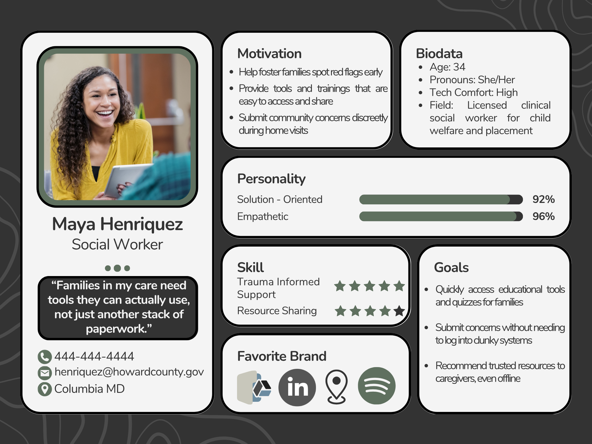
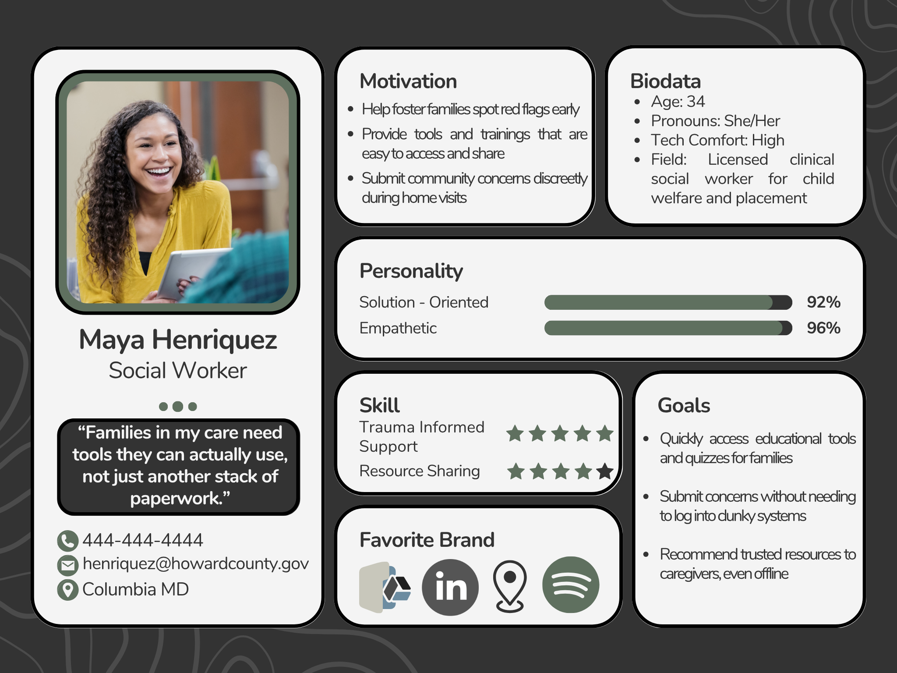

Humanity – Mobile App for Safety and Awareness
Project Overview
Humanity is a mobile-first app designed to raise awareness around human trafficking and empower users to take action safely. Built with a trauma-informed approach, the app enables anonymous reporting, offers educational courses, and connects users with verified resources.
- Anonymous Reporting
- Location-Based Hotspot Map
- Free Learning Courses
- Custom Panic Button Setup
Design Tools: Figma, UX Storyboarding, Wireframing
Status: Wireframes Complete, Hi-Fi UI In Progress
Design Process
User Personas
To guide the design, I developed personas for three core audiences: a college student, a concerned parent, and a social worker. These shaped the app’s core flows—like incident reporting, learning modules, and map alerts.
Wireframes
I created low- to mid-fidelity wireframes focusing on clear user flow, privacy, and mobile-first accessibility. Screens include Home, Map, Report, Learn, Profile, and custom safety settings.

Home

Map Overview

Map Report Detail

Learn Hub

Learn Article View

Courses Hub

Course Module Detail

Report Dashboard

Submit Report – Step 1

Submit Report – Step 2

Submit Report – Step 3
User Personas
To ensure the Humanity app met the needs of real users in high-stakes situations, I developed three distinct personas: a college student, a protective parent, and a trauma-informed social worker. These personas were informed by research into human trafficking awareness behaviors, reporting challenges, and educational needs. Each one helped shape key design decisions—from how anonymity was handled in the reporting flow, to how content was organized in the Learn section, to how local alerts and resources were prioritized in the map experience.
 

Next Steps
With user personas, journey maps, and wireframes now complete, the Humanity project is moving into the high-fidelity UI design phase. Upcoming work will focus on developing a cohesive visual style guide, applying accessible color schemes, and building polished screens in Figma. These designs will be used to create an interactive prototype and finalize the full case study for portfolio presentation. Stay tuned—this project is still actively in progress!